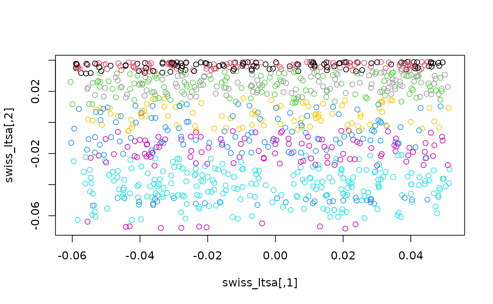
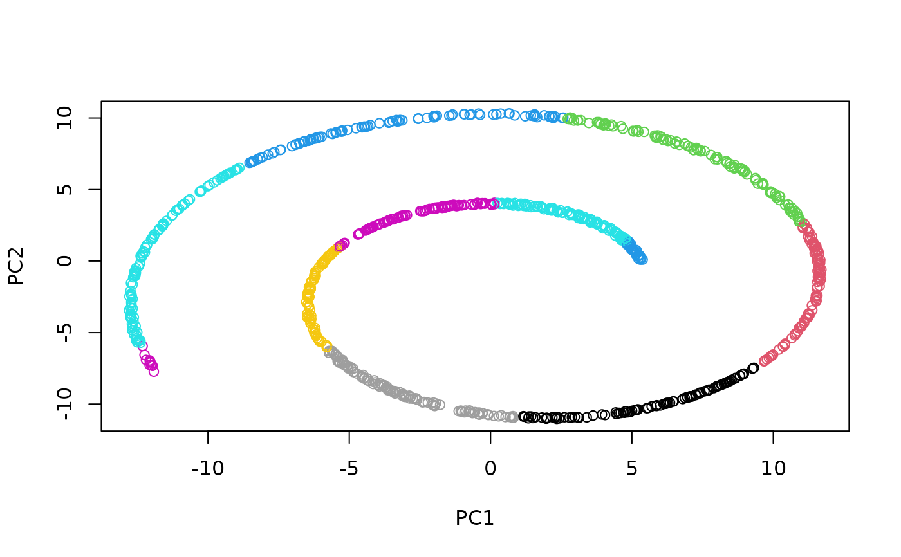

Apply the Local Tangent Space Alignment (LTSA) method (Zhang and Zha, 2004) for dimensionality reduction.
Usage
ltsa(
X,
n_neighbors = NULL,
ndim = 2,
nn_method = "nnd",
eig_method = "rspectra",
include_self = TRUE,
normalize = FALSE,
ret_B = FALSE,
n_threads = 0,
n_assembly_threads = 1,
copy_max_mib = 256,
verbose = FALSE,
...
)Arguments
- X
The input data matrix or data frame with one observation per row. If a data frame is supplied, non-numeric columns are ignored. At least one numeric column is required.
- n_neighbors
The size of local neighborhood (in terms of number of neighboring sample points) used for manifold approximation. If
NULL, the default is15when neighbors are computed, or inferred when a precomputed graph is supplied asnn_method.- ndim
The dimension of the space to embed into.
- nn_method
Method for finding nearest neighbors, or a precomputed nearest-neighbor graph. Can be one of:
"nnd"Approximate nearest neighbors by Nearest Neighbor Descent."exact"Exact nearest neighbors by exhaustively comparing all items. Slow for large datasets.A precomputed nearest-neighbor index matrix.
A nearest-neighbor result object with an
idxmatrix.
Precomputed index matrices should match the raw neighbor-search output used by
rnndescent: one row per observation and 1-based indices intoX. Wheninclude_self = TRUE,ncol(nn_method)must equaln_neighborsand each row must contain its own row index. Wheninclude_self = FALSE,ncol(nn_method)must equaln_neighbors + 1and the first column must contain the row index, because that column is dropped before LTSA assembly.- eig_method
How to carry out the final eigendecomposition. Possible values are:
"rspectra"UseRSpectra::eigs_sym()to generate candidate vectors, then apply null-aware Rayleigh-Ritz postprocessing. This is the default and can report hard backend convergence failures through RSpectra'snconvmetadata."irlba"Useirlba::irlba()to generate candidate vectors, then apply the same null-aware Rayleigh-Ritz postprocessing. This backend does not report RSpectra-style convergence counts, so convergence issues are detected with post-hoc residual diagnostics."svdr"Useirlba::svdr()to generate candidate vectors, then apply the same null-aware Rayleigh-Ritz postprocessing. This backend does not report RSpectra-style convergence counts, so convergence issues are detected with post-hoc residual diagnostics."fullsvd"Use thebase::svd()function. This is only feasible for small datasets and should be used for diagnostic purposes only."eig"or"eigen"Use thebase::eigen()function. This is only feasible for small datasets and should be used for diagnostic purposes only. Dense"eig"is the better diagnostic reference when algebraic eigenvalue ordering matters.
- include_self
Should an item be part of its own neighborhood? This has a minor effect on most results, but work by Zhang and co-workers (2017) suggests that this is in effect the main difference between LTSA and the Hessian Locally Linear Embedding (HLLE) method, so setting this to
FALSEmay allow emulating the HLLE method.- normalize
If
TRUE, calculate the final decomposition on a normalized version of the LTSA alignment matrix. For iterative methods ("rspectra","irlba", and"svdr"), the normalized operator uses the same null-aware Rayleigh-Ritz selection as the unnormalized path, then transforms the selected vectors back to output coordinates. This may be slightly easier to converge while giving similar results to the unnormalized case. It may also have better properties if clustering is to be carried out on the eigenvectors.- ret_B
If
TRUE, return the matrix instead of the eigenvectors. This is mainly useful for diagnostic purposes if eigendecomposition is failing.- n_threads
Number of threads to use. Applies only to the nearest neighbor calculation.
- n_assembly_threads
Number of threads to use when constructing the LTSA alignment matrix
Bafter nearest neighbors are computed. The default1preserves the serial assembly path. Values greater than1opt into parallel construction ofB, which can be faster but may increase peak memory use.- copy_max_mib
Maximum size, in MiB, of the optional row-major dense copy of
Xused to speed up high-dimensional local Gram assembly. If this cap is exceeded, no row-major copy is made. The default is 256 MiB. Set to0to disable this copy. This code path is only used when the number of numeric columns inXis greater than the number of neighbors. Outside of synthetic datasets, you are quite likely to hit this code path.- verbose
If
TRUElog information about progress to the console.- ...
Extra arguments to be passed to the eigendecomposition method specified by
eig_method. For"rspectra", arguments are passed to theoptslist used byRSpectra::eigs_sym(). Suitable parameters include:ncvNumber of Lanczos vectors to use.tolTolerance.maxitrMaximum number of iterations.
For
"irlba", arguments are passed toirlba::irlba(). Suitable arguments include:workWorking subspace dimension size.tolTolerance.maxitMaximum number of iterations.reorthWhether to use full reorthogonalization.
For
"svdr", arguments are passed toirlba::svdr(). Suitable arguments include:extraNumber of extra vectors to use.tolTolerance.itMaximum number of iterations.
The iterative methods all use shared Rayleigh-Ritz postprocessing, residual diagnostics, and adaptive candidate expansion. However, only RSpectra reports explicit convergence counts;
"irlba"and"svdr"rely on post-hoc residual diagnostics instead.Advanced LTSA eigenanalysis controls are also accepted here.
initial_extraandmax_extracontrol how many candidate vectors beyond the constant null vector,ndimembedding vectors, and one boundary-gap vector may be requested.gap_expansion_stepscontrols how many extra attempts are made when rank and residual diagnostics are good but the boundary gap is weak.resid_tolandgap_tolset the scaled residual and global boundary-gap diagnostic tolerances.strict_rescue,strict_rescue_tol,strict_rescue_maxitr,strict_rescue_maxit,strict_rescue_it, andstrict_rescue_extracontrol the stricter rerun used when the selected block appears to contain only part of a near-zero nonconstant eigenspace.For more details see the documentation for
RSpectra::eigs_sym(),irlba::irlba()andirlba::svdr()functions, respectively. Don't pass other arguments unless you know what you are doing, as it may cause theltsato fail.
Details
LTSA forms a sparse alignment matrix B and then returns the low-energy
nonconstant eigenvectors of that matrix. For iterative final eigenanalysis,
flotsam does more than return the raw columns from the eigensolver. It
asks the selected backend for a candidate block, projects out the known
constant null vector, performs a small Rayleigh-Ritz extraction on the
original LTSA matrix, sorts by the resulting Ritz values, and returns the
first ndim nonconstant Ritz vectors.
This postprocessing is intended to make clustered low-energy spectra less
fragile. The iterative methods over-request candidate vectors by default,
check post-null rank, compute scaled residuals against B, inspect the
boundary gap after the selected block, and report near-zero nonconstant mode
counts when verbose = TRUE. A weak boundary gap does not make the result
fail, but it can trigger a small number of diagnostic expansion attempts and
an ambiguity warning because the requested ndim may cut through a larger
low-energy eigenspace.
The "rspectra" path first estimates the largest eigenvalue and solves a
shifted largest-algebraic problem instead of using shift-invert near zero.
RSpectra's nconv metadata is treated as a hard backend convergence check.
The "irlba" and "svdr" paths use the same Rayleigh-Ritz selection and
diagnostics, but they rely on post-hoc residual checks because those
backends do not expose RSpectra-style convergence counts.
References
Zhang, Z., & Zha, H. (2004). Principal manifolds and nonlinear dimensionality reduction via tangent space alignment. SIAM journal on scientific computing, 26(1), 313-338. https://doi.org/10.1137/S1064827502419154
Zhang, S., Ma, Z., & Tan, H. (2017). On the Equivalence of HLLE and LTSA. IEEE transactions on cybernetics, 48(2), 742-753. https://doi.org/10.1109/TCYB.2017.2655338
Examples
n <- 1000
max_z <- 10
phi <- stats::runif(n, min = 1.5 * pi, max = 4.5 * pi)
x <- phi * cos(phi)
y <- phi * sin(phi)
z <- stats::runif(n, max = max_z)
swiss_roll <- data.frame(x, y, z)
# unroll it
swiss_ltsa <- ltsa(swiss_roll)
#> Warning: LTSA eigenanalysis found an ambiguous low-energy eigenspace; embedding may not be unique up to only rotation/sign. Diagnostics: the boundary gap after ndim is weak: global gap = 8.795e-06, local gap = 0.8579, tolerance = 1e-04. This can happen when the neighborhood graph is disconnected or weakly connected, n_neighbors is too small, or ndim cuts through a low-energy eigenspace.
plot(swiss_ltsa, col = phi)

# compare with PCA
swiss_pca <- stats::prcomp(swiss_roll, rank. = 2, scale = FALSE, retx = TRUE)$x
plot(swiss_pca, col = phi)
